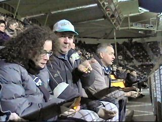

|
Roda JC - NEC (4-0) 9 april 2004 |
Andy met heel verkeerde sjaal.
De sfeerverbeteraars op zuid.
Het grote shirt zeilt weer over Z18!
De 100 supporters van NEC zorgden voor een
behoorlijk potje geluid.
Na een zeer matige partij zomeravondvoetbal bij
10 graden Celsius scoort Redan 1-0 uit een
voorzet van Kone (31').
En die mafkees laten we dus nooit meer naar
RKC teruggaan. Redan = Roda!!!!
Een van de vele vreugdevuren ;-)
Tumult waarbij Neeskens in conflict raakt met
scheidsrechter Vink.

PmR in zijn zoveelste poging om Flashgirl te
verleiden met M&M's. Waartoe chocola bij
vrouwen kan leiden zien we verderop.
Roda heerste vanavond. Vooral in de tweede
helft werd NEC weggespeeld.
Schot van Filipovic wordt ternauwernood door
Gentenaar gestopt.
Even later heeft hij meer succes: 2-0 (53'). Een
prachtige goal!
Een minuut later schiet Kone een nog fraaiere
goal binnen: 3-0 (54').
Hier zit hij er in.
De sfeer steeg per doelpunt!
De jarige Kevin van Dessel.
Vicelich schiet op de paal.
Van Hoogdalem veroorzaakt een penalty.
De strafschop wordt genomen door Wielaert die
de bal op de lat schiet.
Filipovic moet geblesseerd afhaken.
Redan scoort 4-0 (87').
Hoe vaak zal hij zijn shirtje nog uittrekken?
De gasten van NEC vieren met ons mee :-)))
Mooie wedstrijd, bedankt!
Er waren vanavond supporters van Mechelen en
van Alemannia.
KVM-tattoo.
Twee vrolijke tuupen.
Die van Helden werden uit de KO gezet ;-)
De chocolade begint te werken.
Chocola maakt eenieder vrolijk.
Er kwamen vanavond geen spelers naar het
supportershome dus maakten we maar een
praatje met deze heren.